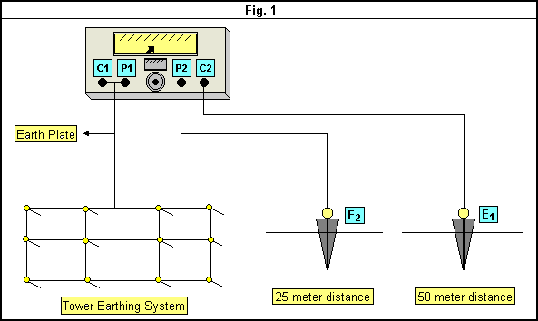

|
|
Transmission Lines
|
Technical Procedure | |
|
Equipment:
Measuring Tower Earthing Resistance Circuit Energized |
Document No.:
TL-021-r0
|
| Issued
to:
EHV Sector
|
| Status:
APPROVED |
Procedure:
Using Multi-ampere set Type PcuiMKII |
Date Approved: 22 June 1998 |
|
Date to be Reviewed:June 2003 |
Introduction
The purpose of this procedure is to provide detailed
safe method for transmission lines maintenance staff to minimize the possibility of
error causing personal injury or damage to equipment to measure the tower earthing
resistance using multi ampere set type routin inspection PCUIMKII
(Circuit energized).
EEA TL engineers in head office and zones using their background
field experience and EEA documentation to create this procedure.
Safety Precautions
A work permit must be issued.
Inspect the used cables before use.
Wear safety shoes and rubber gloves.
Don’t touch any bare conductor during measuring operation.
Tools and Equipment
Multiamper set type (pcuiMKII)
Two steal probe.
Ammeter, voltammeter, hammer and tool bag.
AC (220v) source (generator).
Work to be Carried Out
Connect the jumper between the earth lead and the tower leg then separate the earth lead from the tower leg.
Release the jumper from the tower leg.
Take a distance to 50 meter from the tower leg and use the hammer to insert the first steal probe in the ground (E1).
Connect this steel probe to the terminal (p2) in the multi ampere set through a meter as series connection as in fig. 1
In the same direction take a distance equal to 25 meter insert the second steel probe insert the second steel probe in the ground E2.
Connect a voltameter between E2 , C2
Connect the multi ampere set to the 220V AC source.
Switch on the set and inject a small value of current (I) , read the voltameter reading V and calculate the value of R =V/ I.
Change the injected value of current I and read the value of volt every time then calculate the average value of R every time.
Calculate the average value of R , this is the earting resistance of tower.
When the work must be finished connect the earting plate again to the tower leg .
Release the jumper from the tower leg.
Note: In case of angle tower put the propes in the line that bisects the out side angle. If it is not possible, we can put them on the line that bisect the inside angle.
